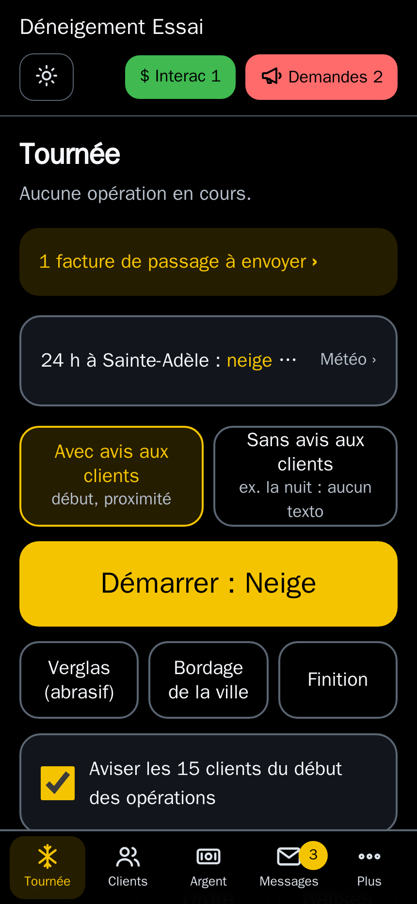
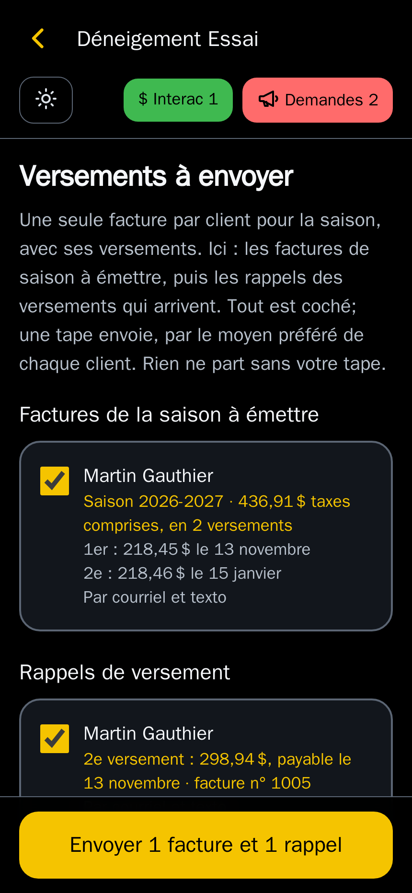
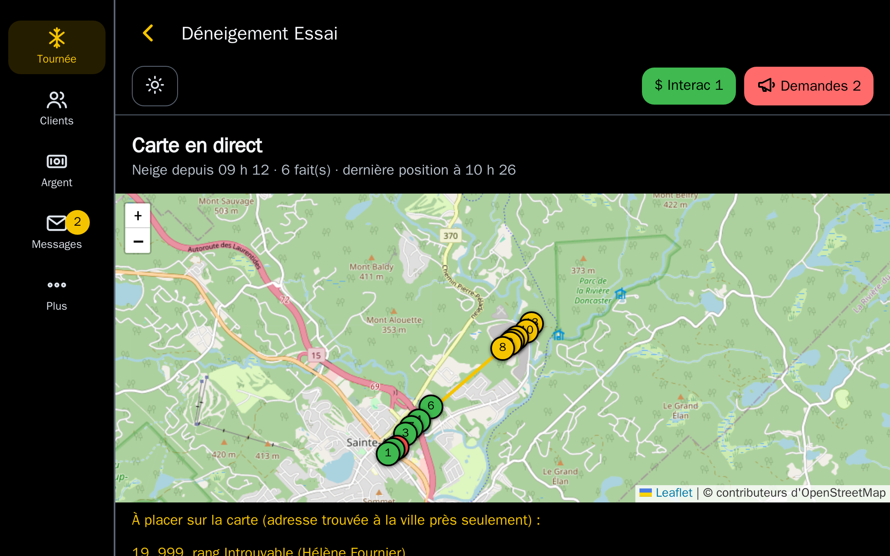

Le Déneigeur
Le DéneigeurLe logiciel du déneigeur, dans la poche du manteau.
Vos clients, votre tournée, vos factures et votre argent à recevoir, sur le cellulaire et au bureau. Pensé pour la tempête : gros boutons qu'on touche avec des gants, et ça fonctionne même sans réseau.

Ce que Le Déneigeur fait pour vous
Fait au Québec, en français, pour les petites et moyennes entreprises de déneigement : celles qui tiennent encore leurs comptes sur papier, et celles qui veulent un outil plus simple.
Sur la route
La tournée
Vos arrêts dans votre ordre, numérotés sur une carte (jaune à faire, vert fait, rouge sauté). L'adresse en gros, Fait ou Sauté d'une tape, avec 5 secondes pour annuler. Itinéraire vers Apple Plans, Google Maps ou Waze. Sans réseau, les passages partent tout seuls au retour du signal.
Avec ou sans avis aux clients
À chaque tempête, vous choisissez : avis par texto au début et quand vous approchez, ou aucun texto (la nuit, pour ne réveiller personne). Un client peut refuser les avis. Propriétaire qui n'habite pas là : les avis vont à ses locataires, les factures à lui.
Le temps à chaque entrée
Avec la position du cellulaire, l'app note le temps passé à chaque entrée et le trajet. Rapport de chaque tournée, et en fin de saison, ce que chaque client vous rapporte à l'heure : les prix à revoir sautent aux yeux.
La météo au point exact
Le modèle à haute résolution d'Environnement Canada, lu au centre de votre ville, même sans page de prévision à son nom : neige, verglas, pluie et température par tranches de 6 heures, avertissements en évidence.
Les jobs à la pièce
Déneigement manuel l'hiver, paysagement l'été : vous partez de la fiche du client, l'app note le départ, l'arrivée, le temps sur place et la distance. La facture se prépare au taux horaire et au kilomètre, le matériel s'ajoute.
Photos, notes et balises
Photo de l'entrée, photo avant ou après le passage, note de dommage ou d'obstacle, avec l'heure. Les balises à poser à l'automne et à retirer au printemps, dans l'ordre de la tournée. Gros boutons qu'on touche avec des gants.
L'argent
Une facture pour la saison
Une seule facture par client, avec TPS et TVQ et ses versements dessus. À la date de chaque versement, l'app vous propose le rappel au client : vous l'envoyez d'une tape. Client inscrit en plein été : la facture part à la date que vous choisissez.
Comptant, Interac, chèques
Paiement noté en passant, reçu envoyé au client. Les avis de virement Interac sont lus et proposés sur la bonne facture. Les chèques postdatés sont notés en main, rappelés le matin de leur date, déposés d'une tape.
Les comptes à recevoir
Qui vous doit quoi, depuis quand. L'app propose les relances (rappel, deuxième avis, dernier avis) seulement pour les versements arrivés et pas payés, facture jointe. Rien ne part sans votre tape.
Au passage et à la pièce
Client au passage : une facture par passage, payable sur réception, envoyées toutes ensemble d'une tape à la fin de la tournée. Jobs à la pièce : main-d'œuvre, déplacement et matériel.
Le rapport pour le comptable
Ventes, TPS et TVQ perçues, argent reçu par mode, revenus par secteur, dépenses par photo du reçu : en PDF, ou en fichier pour Excel. État de compte d'un client en PDF.
Contrats et saison suivante
Contrat de saison en PDF, envoyé au client. Prix taxes comprises ramenés avant taxes. La saison suivante se prépare à partir de la précédente, avec un ajustement en pourcentage.
Les clients et le bureau
Un nouveau client en un passage
Le client, son adresse, ses services et leurs prix, le nombre de versements : la facture de la saison est prête, vous l'envoyez d'une tape. Les prix des saisons passées sont en haut de la fiche.
Les messages au même endroit
Textos et courriels de vos clients dans leur fiche, appels notés. Répondre par le même moyen, appeler, ou rattacher un nouveau numéro au bon client. Envoi à tous vos clients ou à un secteur.
Les demandes
Un oubli, une plainte, un dommage : une demande à suivre jusqu'à ce qu'elle soit réglée, liée au bon client. Pour un dommage : photos, entente de réparation, coût.
Aussi sur l'ordinateur
Le même logiciel s'ouvre en grand sur un ordinateur : argent à recevoir à côté des comptes, fiche du client en deux colonnes, et la carte en direct de la tournée (position du camion, entrées faites et à faire).
Seul ou en équipe, en sécurité
Seul, vous faites tout. En équipe, vous invitez vos employés : ils suivent la tournée, vous gardez la main sur les clients et l'argent. Chacun son mot de passe, et la double authentification avec Google Authenticator.
Vos clients déjà dans l'app
On importe votre liste à partir d'un fichier Excel, de vos papiers, ou de l'export de votre logiciel actuel : adresses, prix, soldes dus et montants déjà reçus. Vos réglages (taxes, versements, secteurs, services), vous les changez vous-même.
Les écrans
Captures de l'application, avec des clients fictifs.
Sur le cellulaire




Au bureau


Le prix
Un abonnement annuel, payé chaque mois, pour le logiciel complet, plus les textos échangés avec vos clients. Rien d'autre. Taxes en sus.
par mois, par entreprise
- Le logiciel complet, toutes les fonctions
- Un utilisateur compris, avec tous les droits (administrateur et opérateur)
- Votre adresse vous@ledeneigeur.com
- Mises à jour et sauvegardes comprises
Abonnement annuel, facturé mensuellement (99 $ par mois)
- Des textos en bon français, avec les accents
- Vous voyez chaque mois ce que vous avez envoyé et reçu
Questions
Faut-il installer quelque chose?
Non. Le Déneigeur s'ouvre dans le navigateur du cellulaire et s'ajoute à l'écran d'accueil comme une application. Il fonctionne aussi sur un ordinateur.
Et s'il n'y a pas de réseau sur la route?
L'écran de tournée reste utilisable sans réseau. Les passages notés sont gardés dans le téléphone et envoyés dès que le signal revient, avec la bonne heure.
Mes clients vont-ils recevoir des textos de mon cellulaire personnel?
Non. Les textos partent d'un numéro d'affaires, et les réponses de vos clients arrivent dans l'application, dans leur fiche.
J'utilise déjà un autre logiciel. Je perds mes clients?
Non. Exportez votre liste de clients de votre logiciel actuel (Excel ou CSV) : on l'importe, adresses, téléphones, prix et soldes compris.
Combien de personnes peuvent l'utiliser?
Un utilisateur est compris dans l'abonnement. Chaque utilisateur de plus, opérateur (il fait la tournée) ou administrateur (il gère aussi les clients et l'argent), est à 25 $ par mois. Un accès en lecture seule (votre comptable, un associé qui veut suivre les comptes) est gratuit : il consulte, il ne change rien. Chaque personne a son propre compte.
Mes données sont-elles à moi?
Oui. Elles sont sauvegardées deux fois par jour, et vous pouvez en obtenir une copie complète.
Nous écrire
Une question, une démonstration avec vos propres données : écrivez-nous, on vous répond rapidement.
info@ledeneigeur.comOu par téléphone : 514 360-3227
SLAPP Technologies Inc.
204, rue Saint-Charles, bureau 103, Sainte-Thérèse (Québec) J7E 2B4